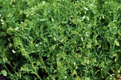

Specialty Crops

Specialty crops are grown in Saskatchewan as farmers continue to seek other crops which
can be grown for a profit. Over the past few years, special crops that have planted include lentils, mustard, canary seed, peas , sunflower seed, faba bean and buckwheat, triticale and grain corn. These crops accounted for over 1.2 million hectares in 1995. The list of special crops continues to change; coriander, caraway, pinto bean and seed potatoes are produced in the province.
Certain specialty crops can be used to
improve the health of the soil by replacing nutrients used in crop production. Pulse crops such as lentils (shown left), field peas and faba beans add nitrogen to the soil. These crops have the ability to capture nitrogen from the soil and the air and then convert it
into a form that can be used by the crop.
Herbs and Spices The use of herbs and spices has been practiced in
Saskatchewan for centuries. Inhabitants used these herbs for the medicinal
properties or for flavouring food. Commercial production is a recent development.
Producers are interested in growing and marketing alternative crops in Saskatchewan.
Herbs and spices can provide a complementary enterprise to other horticultural
operations such as a market garden, where overhead and labor can be
shared. Spices might be an alternative crop for a grain farm.
Spices
Spices are seeds, root, bark and flowers
of plants that are grown, harvested and processed for use as food
or beverage flavoring.
Spices are plant products which have long been produced in Europe, United States, India,
Southeast Asia, and Africa. They are used mainly for flavouring food and beverages.
Spice growers commonly sell to agents. Agents clean, bag and ship the seed to brokers
or processors. Spice brokers buy spices from agents all over the world.
Spice millers/blenders are referred to as Spice Houses.
They buy ground or dried spice from brokers and further process and blend the spice.
They sell to food processors or packers who market spice blends for retail sale.
Curry powder, widely used in Indian cooking, is a pulverized blend of about 20 spices.
Most commonly used are cardamom, chiles, cinnamon, cloves,
coriander, cumin, fennel seed, fenugreek, mace, nutmeg, red and black
pepper, poppy and sesame seeds, saffron, tamarind and turmeric
(the yellow color in curry dishes).
Authentic Indian curry powder is freshly ground each day and can vary
greatly depending on the region and the cook.
Spices usually are grown on large areas, utilizing farm equipment similar to that used
for cereal or oilseed production. Four spices common to Saskatchewan are
mustard, dill,
coriander, and
caraway.
- Mustard has been grown in significant quantities in Western Canada since the 1950's. Western Canada produces 150,000 to 570,000 acres annually. The three main types of mustard produced in Saskatchewan are yellow, brown, and Oriental.
Yellow (or white) mustard produces a mild flavour utilized in North America as a processed meat additive and in hot dogs. Brown and Oriental mustard produces a stronger flavour and is used in specialty prepared mustard and foods.
- Dill was produced on approximately 100 acres in Saskatchewan in 1993. It is grown primarily for the production of dill oil, a flavouring compound used in prepared food products such as pickles;leaves and flowering tops are used
in pickling and the dried leaves (known as dillweed) are used as flavoring
in cheese, potato and pasta dishes.
- Coriander acreage has increased in Saskatchewan to approximately 8,000 acres in 1993. The two types of coriander crops grown are the large seed type and the small seed or cilantro type.
The large seed is used for flavouring foods such as curry, and is marketed in the large urban centres of North America. The fresh foliage is called cilantro and is used in such foods as fresh salads, salsas and soups.
- Caraway seed oil is used in sausages, meats
and perfumes. The seed is used for flavouring baking and cheese products. Approximately 1,000 acres of caraway were seeded in Saskatchewan in 1993.
Two new spices showing potential for Saskatchewan production are fenugreek and cumin.
- Fenugreek is an annual legume crop used for flavouring foods such as curry and soups. The leaves and stems can be served as a vegetable and the seeds are used in medicines. It can be grown using traditional cereal machinery. Fenugreek was planted in Saskatchewan on a commercial scale for the first time in 1991. There were approximately 100 acres seeded in 1993.
- Cumin is an annual crop used as for flavouring curry and other foods. The oil has medicinal uses, veterinary
uses and is used in perfumes. Research indicates it may be best suited to the parkland area of Saskatchewan.
Herbs
Herbs are the leaves, roots and flowers
of plants grown and processed for culinary, cosmetic, industrial,
medicinal, landscaping, decorative and fragrance purposes.
Herbs have traditionally been produced in temperate and semi-tropical regions, such as Turkey and India, where the climate is favourable and low labour costs have made production profitable.
North American commercial herb production is based on high quality standards. Canadian producers must produce crops of high quality in order to be successful in the high end market.
Herbs are usually produced on a small scale. Much hand labour and specialized equipment are required. Hand labour accounts for 50% of total production and marketing costs. Family labour is a big help. Herbs differ from spices in that the plant part of importance is the leaf, root or flower, but rarely the seed.
The four main herb markets are:
The culinary market includes food processing giants like General Foods and Campbell's, and the hotel, restaurant and institution trade. These organizations use herbs in baked goods, meat products, soups, pickles, and beverages. Herb and spice companies, such as McCormicks or Spice Island, sell dried or powdered culinary herbs directly to consumers. Farmers' Markets and grocery stores also market freshly, dried or potted culinary herbs to consumers.
The four main types of culinary herbs are fresh, dried, powdered, or tea.
- Fresh herbs: Fresh herbs can spoil very quickly. To be successful in fresh herb production, producers should be located close to their market.Fresh herbs can be sold by growers directly to
consumers through farmers markets or farm gate sales. Live plants are sold at farmer's markets, garden centres and landscape stores.
Producers may be able to develop markets for live plants with hotels
and restaurants. A key requirement of direct to consumer sales is
the inclusion of recipes and instructions to assist consumers to use
herbs in meal preparations. Consumers may be willing to pay a premium
price for fresh herbs that can be certified as organically grown.
- Dried or powdered: These herbs are normally dried after harvest on the farm due to their delicate nature. For example, sweet basil should be harvested by cutting the stalks when the plant begins to flower. The stalks and leaves should then be dried for approximately two weeks in a temperature controlled, dry, dimly lit environment to reduce the loss of their desirable volatile properties. Dried herbs are sold as whole leaves or in a chopped, cut, rubbed or ground form.
An advantage of marketing dried herbs is that
after drying, herbs lose their quality slowly and can therefore be
transported over greater distances. Also, the markets for dried herbs
aren't restricted by the seasonality of the crop.
- Tea Herbs: The herbal tea market is growing especially as exports to Asia. Herbs included in the tea market are: catnip, rose hip, lemon balm, camomile, etc.
Culinary herbs are the most popular type in production. Some countries specialize in particular herbs (such as oregano from Greece and Italy). This allows them to influence the market by adjusting the price to capture market share or create barriers to the entry of new producers.
Some culinary herbs grown in Saskatchewan are basil, garlic, spearmint, dill, oregano, French sorrel, french tarragon, thyme, marjoram, parsley, sage, summer savory, chives, catnip, lemon balm and camomile.
Pharmaceutical/Medicinal herbs have been used for centuries. Over 50% of all pharmaceutical applications in China are herbal. The Chinese and Indian governments have actively promoted the development of plant-based medicines. The pharmaceutical market sells herbs in
various forms for their medicinal value. An important factor in this
market is requirement of organic or residue free (no chemicals) products. The medicinal market uses herbs to
produce teas, tablets, capsules, creams, oils and liquids that are
all sold as medicinal preparations.
The natural products and health food industry is growing at a rate of 12% per year in the United States, and 8% per year in Canada. One of the fastest growing segments is herbs.
Pharmaceutical/medicinal herbs include blessed thistle, calendula, hyssop, borage (borage seed oil is a source of high quality gamma linolenic
acid (GLA) which may help inhibit cholesterol and lower blood pressure, garlic, chives, echinacea and German camomile.
Essential oils are distilled from the petals, bark, seed, stems, leaves or hairs of the plant. Essential oils are used in the food industry as flavourings; the cosmetic and perfume industry for fragrances; and in the pharmaceutical industry for active ingredients.
Plants used in the production of essential oils are
- flavouring and perfume: dill, coriander, fennel, parsley, monarda, sage, basil, thyme, mint, tarragon, onion and garlic.
- pharmaceutical: borage, foxglove or digitalis, ginseng, yarrow and evening primrose.
Wild crafted herbs are plants collected from the wild. They are collected in a controlled manner to prevent the destruction of their source or the environment in which they are found.
Some wild crafted plants are used for the production of wreaths and bouquets. Popularity of dried flower arrangements has increased in recent years.
Dried herbs used for wreaths and bouquets are: annual German statice, strawflower, baby's breath, xeranthemum and larkspur.
A new initiative for wild crafting is the harvest of forest and parkland medicinal plants. This use of herbs has been practised for centuries; however, commercial viability is now being evaluated. Wild crafted forest and parkland medicinal plants include senega roots, ratroot, and wild licorice.
Other specialty crops grown and businesses that operate in the province include:
- Berry
Berry production has increased significantly
in the last ten years. Crops such as strawberries, raspberries and saskatoon berries are produced and several u-pick ventures are operated in the province.
The success of these operations are due, in part, to the development of new varieties of these popular fruits, like saskatoon berries that produce larger, more abundant fruit. Other types of berries being
harvested and marketed include wild pin cherries, currants, blueberries and low bush cranberries.
- Market Gardens
Saskatchewan has many market gardens located throughout the central and southern regions of the province. A wide variety of vegetables are produced and made available directly to the consumer form the producer. Producers of vegetables often use irrigation
to increase crop yield.
- Other Crops
The crops described up to this point
are recognizable plant types utilized by the producers of Saskatchewan.
There are others that may become more common as particular growing
techniques are developed or as specialty markets expand. Herb
and spice crops (dill, anise, coriander and caraway seed) and
health food crops (borage and quinoa) are other minor specialty crops.
|